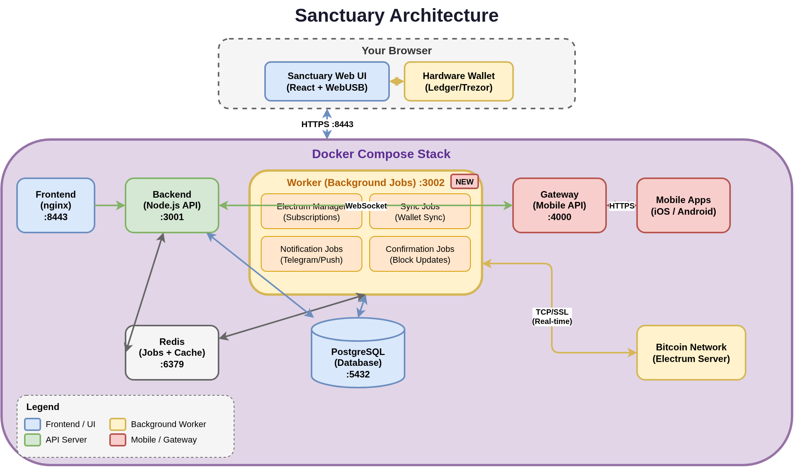

Security
Don't trust. Verify.
Sanctuary is a watch-only coordinator. It sees what your addresses see on-chain — and builds transactions for your hardware wallet to sign. That's all. The architecture below exists so you can inspect exactly what it holds, where it runs, and where trust lands.
privateKey, seed, or mnemonic and you'll find zero matches in the server. AES-256-GCM at rest with scrypt-derived keys, JWT revocation, TOTP 2FA, per-route wallet RBAC, double-submit CSRF, HMAC-signed gateway calls, and an isolated AI proxy with no DB access.
What Sanctuary holds — and what it never holds
Stored on your server
- › Extended public keys (xpubs) — watch-only
- › Wallet metadata (names, descriptors, settings)
- › Transaction and address history
- › Address derivation state
- › Labels and user-supplied annotations
- › User accounts, preferences, encrypted 2FA secrets
- › Audit logs of security-relevant events
Never stored, never transmitted
- › Private keys
- › Seed phrases
- › Wallet passwords / passphrases
- › Hardware-wallet PINs
These live only on your hardware wallet. Sanctuary has no way to recover funds if that device is lost without its seed backup.
The signing flow, end-to-end
-
1
You build the transaction in Sanctuary
Recipient, amount, fee rate, UTXO selection. Sanctuary assembles this into a PSBT — a standard format that describes the transaction without any signatures.
-
2
The PSBT is handed to your hardware wallet
Over USB (WebUSB / WebHID / WebSerial), over QR code, or over a file on MicroSD. Pick whichever gives you the isolation you want.
-
3
You verify on the device screen
This is the load-bearing step. The hardware wallet shows the recipient address, amount, and fee — rendered by the device itself, not by Sanctuary. If those match what you intended, press confirm. If they don't, refuse.
-
4
The signed PSBT comes back
The signature was computed inside the hardware wallet. The private key never leaves it. Sanctuary takes the signed PSBT, finalizes it, and broadcasts it to the network.
The rule: if Sanctuary is ever compromised, the worst an attacker can do is present a false transaction for your device to sign. The device's screen is your last line of verification — always read it before you press confirm.
Architecture

| Component | Port | Purpose |
|---|---|---|
| Frontend | :8443 | React UI served via nginx (HTTPS for WebUSB) |
| Backend | :3001 | Node.js API — wallet logic and user requests |
| Worker | :3002 | Electrum subscriptions, sync, notifications, confirmations |
| Gateway | :4000 | Mobile API with JWT auth, route whitelisting, rate limiting |
| Redis | :6379 | Job queue (BullMQ) and distributed cache |
| PostgreSQL | :5432 | Primary database |
All components run in Docker containers under your control. None of them reach out to a Sanctuary-owned service — there isn't one.
HTTPS & secure contexts
Browsers only expose WebUSB, WebHID, WebSerial, and camera APIs from a secure context — HTTPS or localhost. The default setup ships HTTPS on port 8443 with a self-signed certificate. That's why you see a certificate warning on first visit — it's expected and you should proceed past it on localhost.
- › HTTP requests on port 8080 are redirected to HTTPS.
- › For a cleaner local experience, use mkcert to generate a locally-trusted cert.
- › For production on a domain, drop a Let's Encrypt certificate into
docker/nginx/ssl/.
Encryption at rest
Sensitive values — Electrum node passwords, 2FA shared secrets — are encrypted in the database using the ENCRYPTION_KEY / ENCRYPTION_SALT pair generated during install. User passwords are hashed with bcrypt. Electrum server TLS certificates are verified by default; self-signed certs are rejected unless explicitly allowed.
When restoring a backup onto a different instance (different encryption key), the data you can still decrypt is imported cleanly; anything tied to the old encryption boundary is cleared with a clear warning, never silently re-keyed. See Backup & restore for the full matrix.
Network exposure
By default Docker binds ports to 0.0.0.0, meaning Sanctuary is reachable from every device on your LAN. To restrict to localhost only:
# docker-compose.override.yml
services:
frontend:
ports:
- "127.0.0.1:${HTTP_PORT:-80}:80"
- "127.0.0.1:${HTTPS_PORT:-443}:443"
For remote access, put Sanctuary behind a reverse proxy (nginx / Caddy / Traefik) with a proper certificate, or reach it over a VPN.
What you're responsible for
Self-hosting moves real work onto you. The short list:
- › Back up your hardware wallet seed. Sanctuary cannot recover funds.
- › Change the default password (
admin/sanctuary) on first login. The UI forces this. - › Keep Docker and the host OS updated. Sanctuary is only as secure as what it runs on.
- › Use strong passwords and enable 2FA.
- › Restrict network exposure unless you have a reason not to.
- › Save
ENCRYPTION_KEY/ENCRYPTION_SALTif you might restore onto a different machine later. - › Verify every transaction on the device screen — every single time.
Reporting security issues
Found a vulnerability? Please don't open a public issue. Use GitHub's private security advisories to report it privately to the maintainers.